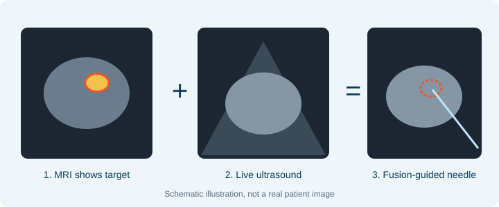
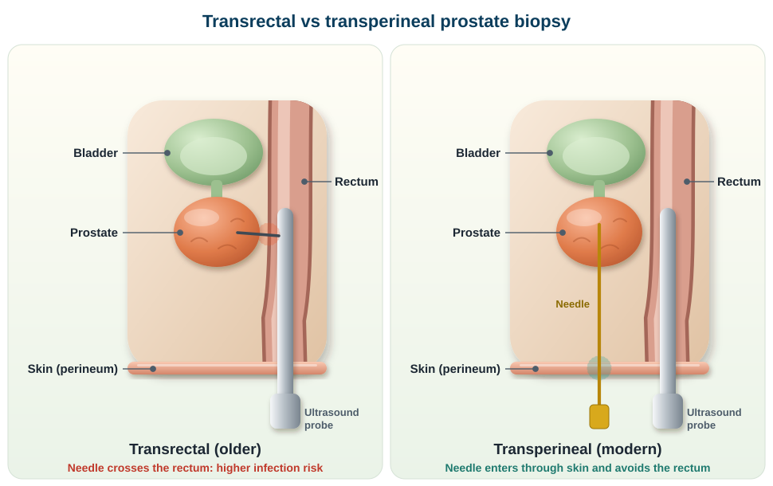
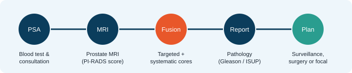

A raised PSA, or an MRI report that mentions a “PI-RADS 4” or “PI-RADS 5” lesion, can be frightening. The next question is usually: do I really have cancer, and how do we find out safely? For many men in Kerala, the answer today is a fusion biopsy, specifically an MRI fusion transperineal prostate biopsy.
What is an MRI fusion biopsy?
Prostate cancer is often invisible on a standard ultrasound. A prostate MRI, however, can show suspicious areas and grade them on the PI-RADS scale from 1 to 5. In a fusion biopsy, specialised software overlays the MRI, with the suspicious area outlined, onto the live ultrasound image during the procedure. This lets me aim the needle directly at the abnormal zone. This is called a targeted biopsy.
A systematic biopsy samples the whole gland in a standard pattern. It is usually added to the targeted cores so that nothing important is missed.

What does “transperineal” mean?
The older approach, transrectal biopsy, passes needles through the wall of the rectum. The transperineal approach passes them through the skin of the perineum, the area between the scrotum and the anus, and avoids the rectum altogether.

Why choose a fusion transperineal biopsy?
- Better detection of significant cancerLarge trials such as PRECISION found that MRI-targeted biopsy detects more clinically significant cancers than random systematic biopsy, while finding fewer low-risk cancers that never needed treatment.
- Lower infection riskBecause the needle does not pass through the rectum, serious infection (sepsis) is very uncommon.
- Reaches difficult areasThe front (anterior) and tip (apex) of the prostate are hard to sample transrectally. The transperineal route reaches them far more reliably.
- Fewer repeat biopsiesTargeting the exact lesion reduces the chance of a “false negative” result and the anxiety of being called back.
- Helps plan treatmentPrecise mapping of where the cancer lies supports decisions about active surveillance, robotic surgery or focal therapy.
The guideline view
Transperineal biopsy is the guideline-preferred approach in Europe, is being adopted rapidly in the USA and other Western centres, and is now expanding quickly to the rest of the world. Here is how the two routes compare:
| Transperineal (through the skin) | Transrectal (through the rectum) | |
|---|---|---|
| EAU guideline | Preferred approach (strong recommendation) | Second choice, when a transperineal biopsy is not feasible |
| Infection and sepsis | Lower risk in randomised trials (for example PREVENT) | Higher: the needle crosses the bacteria-rich rectal wall |
| Antibiotics | Often avoidable or minimised with good skin preparation (recent EAU guidance) | Broad-spectrum cover and rectal preparation usually needed |
| Sampling | All zones reached, including the anterior prostate and apex | Anterior zones harder to reach |
| Cancer detection | Higher detection of clinically significant cancer in the large UK TRANSLATE trial (60% vs 54%) | Lower in that head-to-head comparison |
| Targeting | MRI fusion-guided targeted cores plus systematic cores | Traditionally ultrasound-guided random cores |
| Anaesthesia and comfort | Sedation or general anaesthesia (local also possible); can be slightly longer | Usually local anaesthesia; quicker |
Who needs a fusion biopsy?
- A persistently raised or rising PSAEspecially when infection has been ruled out and the trend keeps climbing.
- A suspicious prostate MRIA PI-RADS 3, 4 or 5 lesion, or an abnormal finding on digital rectal examination.
- A previous negative biopsy with ongoing suspicionTargeting helps find what a random biopsy may have missed.
- Active surveillance or focal therapy planningMen who need confirmatory targeted sampling or accurate mapping of the tumour.
The patient journey, step by step

- 1. Before the procedureA consultation, a review of your PSA trend and medicines (especially blood thinners), a prostate MRI and a urine test to rule out infection.
- 2. The procedureUsually a day-care procedure of roughly 30 to 45 minutes under anaesthesia. The MRI target is fused with live ultrasound and needles are guided through the perineum to the target and the surrounding gland.
- 3. RecoveryMost men go home the same day. Mild perineal discomfort, a little blood in urine, or blood in semen for a few weeks is common and settles on its own. A small number of men have temporary difficulty passing urine, which we manage promptly.
- 4. ResultsPathology is usually available within about a week. We then discuss whether no treatment is needed, active surveillance is suitable, or treatment such as robotic prostatectomy or focal therapy should be considered.
Fusion biopsy in Kochi, Kerala: what to look for
If you are searching for a fusion biopsy in Kochi or elsewhere in Kerala, it helps to ask four questions. Is the biopsy transperineal? Is MRI fusion software used to take targeted cores? Is the MRI reviewed by an experienced radiologist? And is there a team that can offer the full range of options if cancer is found, from surveillance to robotic surgery and focal therapy?
At Aster Medcity, Kochi, I perform MRI fusion transperineal biopsies as part of a complete prostate cancer pathway, so that diagnosis and treatment planning happen together. I am bringing my expertise as a pioneer of this biopsy technique to the region, making guideline-preferred prostate diagnosis available close to home in Kerala.
Training behind the technique
- Johns Hopkins, USAFocal therapy observership under Dr. Arvin K. George, with exposure to MRI fusion-guided targeting and precision prostate cancer care.
- London, UKCompleted hands-on training in transperineal biopsy in London, and presented my research at the European Association of Urology (EAU) Congress 2026.
- Robotic uro-oncologyVattikutti Fellowship in Robotic Surgery and Uro-Oncology at Medanta, Gurugram, along with fellowships at AdventHealth Orlando and UCSD.
This experience is why I can offer targeted diagnosis and, if needed, the full range of treatment from active surveillance to robotic surgery and focal therapy, close to home.
Frequently asked questions
- Is MRI fusion biopsy available in Kochi?Yes. It is available at Aster Medcity, Kochi for men with a raised PSA or a suspicious MRI.
- Does a fusion biopsy hurt?The procedure is done under anaesthesia, so you should not feel pain during it. Some soreness afterwards is normal.
- If my MRI is normal, do I still need a biopsy?Not always. A good-quality negative MRI makes significant cancer less likely, but PSA density, family history and other factors still matter. We decide this together.
- Is a targeted biopsy enough on its own?Often a combination of targeted and systematic cores gives the most complete picture. The approach is tailored to your MRI and history.
- How soon can I return to work?Most men resume light activity in a day or two. Heavy exertion is usually avoided for about a week.
Raised PSA or a suspicious MRI?
Bring your PSA reports, any previous values and your MRI. We will decide together whether a fusion biopsy is the right next step.
Book Your ConsultationOPD: Department of Urology, Aster Medcity, Kochi · Monday to Saturday, 11 AM to 5 PM
References
- European Association of Urology. Guidelines on Prostate Cancer, diagnostic evaluation: transperineal biopsies are preferred over transrectal biopsies.
- Hu JC, et al. Transperineal vs transrectal prostate biopsy: the PREVENT randomized clinical trial. JAMA Oncology, 2024.
- Bryant RJ, et al. Local anaesthetic transperineal biopsy versus transrectal prostate biopsy in prostate cancer detection (TRANSLATE). Lancet Oncology, 2025;26:583–95.
- Pilatz A, et al. Transperineal prostate biopsy without antibiotic prophylaxis: the new gold standard? Recommendations from the EAU Guidelines. European Urology, 2026;89:91–2.